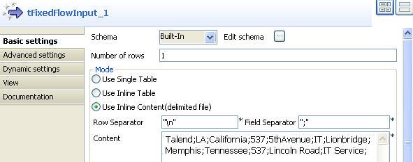
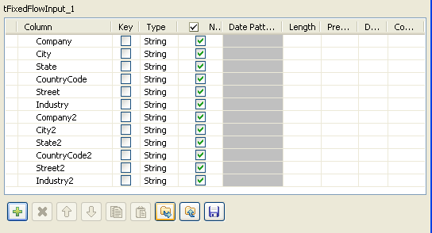
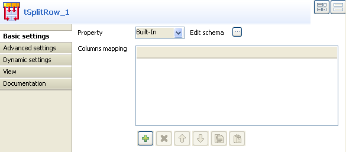
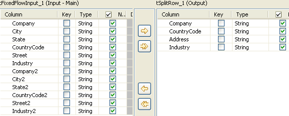
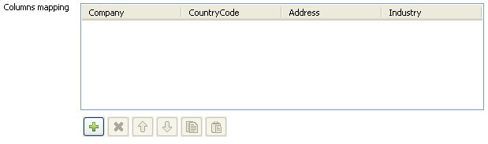
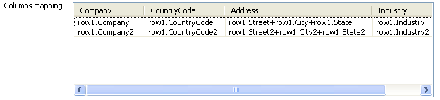
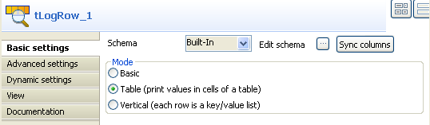

|
Famille de composant |
Processing/Fields | |
|
Fonction |
Le composant tSplitRow découpe une ligne en plusieurs lignes. | |
|
Objectif |
Ce composant vous permet de séparer une ligne d'entrée en plusieurs lignes de sortie. | |
|
Basic settings |
Schema et Edit Schema |
Un schéma est une description de lignes, i.e., il définit le nombre de champs qui sont traités et passés au composant suivant. Le schéma est soit local (built-in) soit distant dans le Repository. Cliquez Edit Schema pour modifier le schéma. Notez que si vous effectuez des modifications, le schéma devient automatiquement built-in. Cliquez sur Sync columns pour récupérer le schéma du composant précédent dans le Job. |
|
|
|
Built-in : Le schéma sera créé et conservé pour ce composant seulement. Voir également le Guide utilisateur de Talend Open Studio. |
|
|
|
Repository : Le schéma existe déjà et est stocké dans le Repository. Ainsi, il peut être réutilisé dans divers projets et Jobs. Voir également le Guide utilisateur de Talend Open Studio. |
|
|
Columns mapping |
Cliquez sur le bouton [+] pour ajouter autant de lignes que nécessaire pour effectuer le mapping des colonnes d'entrée vers les colonnes de sortie. |
|
Advanced settings |
tStatCatcher Statistics |
Cochez cette case pour collecter les données de log, aussi bien au niveau du Job qu’au niveau de chaque composant. |
|
Utilisation |
Ce composant découpe une ligne d'entrée en de multiples lignes de sortie, en mappant les colonnes d'entrée vers les colonnes de sortie. | |
|
Limitation |
n/a | |
Ce scénario décrit un Job a trois composants. Une ligne de données contenant des informations concernant deux entreprises sera séparée en deux lignes.
Déposez les composants suivants de la Palette dans l'espace de modélisation graphique : tFixedFlowInput, tSplitRow et tLogRow.
Reliez-les à l'aide de liens Row Main.
Double-cliquez sur le tFixedFlowInput afin d'ouvrir sa vue Basic settings.
Sélectionnez Use Inline Content(delimited file) dans la zone Mode.
Dans la zone Content, saisissez les scripts suivants :
Talend;LA;California;537;5thAvenue;IT;Lionbridge;Memphis;Tennessee;537;Lincoln Road;IT Service;
Cliquez sur Edit schema pour ouvrir une boîte de dialogue afin d'éditer le schéma des données d'entrée.
Cliquez sur le bouton [+] pour ajouter douze colonnes d'entrée : Company, City, State, CountryCode, Street, Industry, Company2, City2, State2, CountryCode2, Street2 et Industry2.
Cliquez sur OK pour fermer la boîte de dialogue.
Double-cliquez sur le composant tSplitRow afin d'ouvrir sa vue Basic settings.
Cliquez sur Edit schema pour configurer le schéma des données de sortie.
Cliquez sur le bouton [+] sous la table tSplitRow_1(Output) affin d'ajouter quatre colonnes de sortie : Company, CountryCode, Address et Industry.
Cliquez sur OK pour fermer la boîte de dialogue. Une table vide contenant le nom des colonnes définies dans l'étape précédente apparaît dans la zone Columns mapping :
Cliquez sur le bouton [+] sous la table Columns mapping afin d'ajouter deux lignes de sortie.
Renseignez la table Columns mapping en saisissant les valeurs suivantes dans les colonnes :
Company: row1.Company, row1.Company2;
Country: row1.CountryCode, row1.CountryCode2;
Address: row1.Street+","+row1.City+","+row1.State, row1.Street2+","+row1.City2+","+row1.State2;
Industry: row1.Industry, row1.Industry2;
![[Note]](../images/note.png)
La valeur dans la colonne Address, par exemple, row1.Street+","+row1.City+","+row1.State, affiche une adresse absolue en combinant les valeurs des colonnes Street, City et State. "row1" utilisé dans les valeurs de chaque colonne fait référence à la ligne d'entrée du tFixedFlowInput.
Double-cliquez sur le tLogRow afin d'ouvrir sa vue Basic settings.
Cliquez sur le bouton Sync columns pour récupérer le schéma défini dans le composant précédent.
Sélectionnez Table (print values in cells of a table) dans la zone Mode.
Sauvegardez le Job et appuyez sur F6 pour l'exécuter.
Les données d'entrée en une ligne sont séparées en deux lignes différentes, chaque ligne contenant es informations d'une des deux entreprises.